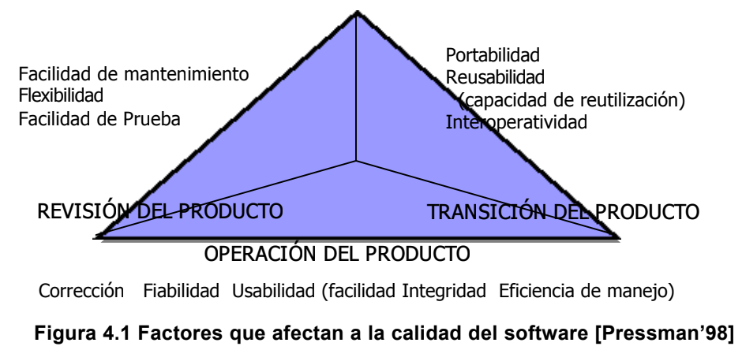
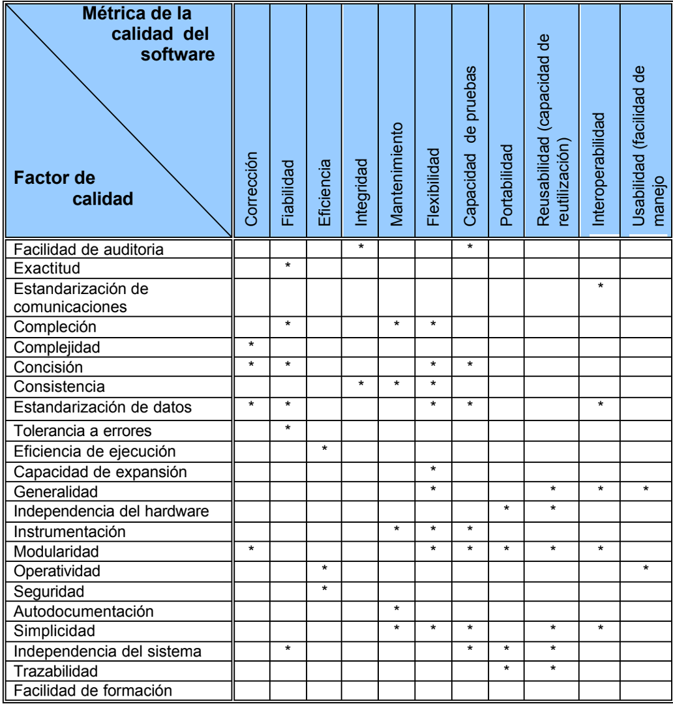

La calidad de un sistema, aplicación o producto es tan buena como los requisitos que detallan el problema, el diseño que modela la solución, el código que transfiere a un programa ejecutable y las pruebas que ejercita el software para
detectar errores. Un buen ingeniero del software emplea mediciones que evalúan la calidad del análisis y los modelos de diseño, así como el código fuente y los casos de prueba que se han establecido al aplicar la ingeniería del software. Para
obtener esta evaluación de calidad, el ingeniero debe utilizar medidas técnicas, que evalúan la calidad con objetividad, no con subjetividad.
A medida que el proyecto progresa el administrador del proyecto siempre debe valorar la calidad. Aunque se pueden recopilar muchas medidas de calidad, el primer objetivo en el proyecto es medir errores y defectos. Las métricas
que provienen de estas medidas proporcionan una indicación de la efectividad de las actividades de control y de la garantía de calidad en grupos o en particulares.
Los errores detectados por hora de revisión y los errores detectados por hora de prueba suministran una visión profunda de la eficacia de cada una de las actividades envueltas en la métrica. Así los datos de errores se pueden utilizar también para calcular la eficiencia de eliminación de defectos en cada una de las actividades del marco de trabajo del proceso.
McCall y Cavano [John A. McDermid ‘91] definieron un juego de factores de calidad como los primeros pasos hacia el desarrollo de métricas de la calidad del software. Estos factores evalúan el software desde tres puntos de vista distintos:
1. OPERACIÓN DEL PRODUCTO (Utilizándolo)
2. REVISIÓN DEL PRODUCTO (Cambiándolo)
3. TRANSICIÓN DEL PRODUCTO (Modificándolo para que funcione en un entorno diferente, por ejemplo, "Portándolo")
Los autores describen la relación entre estos factores de calidad (lo que llaman un ‘marco de trabajo’) y otros aspectos del proceso de ingeniería del software:
En primer lugar el marco de trabajo proporciona al administrador identificar en el proyecto lo que considera importante, como: facilidad de mantenimiento y transportabilidad, atributos del software, además de su corrección y rendimiento funcional teniendo un impacto significativo en el costo del ciclo de vida.
En segundo lugar, proporciona un medio de evaluar cuantitativamente el progreso en el desarrollo de software teniendo relación con los objetivos de calidad establecidos.
En tercer lugar, proporciona más interacción del personal de calidad, en el esfuerzo de desarrollo.
Por último, el personal de calidad puede utilizar indicaciones de calidad que se establecieron como ”pobres” para ayudar a identificar estándares “mejores” para verificar en el futuro.
A un programa le corresponde operar correctamente o suministrará poco valor a sus usuarios. La corrección es el grado en el que el software lleva a cabo una función requerida. La medida más común de corrección son los defectos por KLDC, en donde un defecto se define como una falla verificada de conformidad con los requisitos.
El mantenimiento del software cuenta con más esfuerzo que cualquier otra actividad de ingeniería del software. La facilidad de mantenimiento es la habilidad con la que se puede corregir un programa si se encuentra un error, se puede adaptar si su entorno cambia o optimizar si el cliente desea un cambio de requisitos.
No hay forma de medir directamente la facilidad de mantenimiento; por consiguiente, se deben utilizar medidas indirectas. Una métrica orientada al tiempo simple es el tiempo medio de cambio (TMC), es decir, el tiempo que se tarda en analizar la petición de cambio, en diseñar una modificación apropiada, en efectuar el cambio, en probarlo y en distribuir el cambio a todos los usuarios. En promedio, los programas que son más fáciles de mantener tendrán un TMC más bajo (para tipos equivalentes de cambios) que los programas que son más difíciles de mantener.
Hitachi ha empleado una métrica orientada al costo (precio) para la capacidad de mantenimiento, llamada “desperdicios”. El costo estará en corregir defectos hallados después de haber distribuido el software a sus usuarios finales. Cuando la proporción de desperdicios en el costo global del proyecto se simboliza como una función del tiempo, es aquí donde el administrador logra determinar si la facilidad de mantenimiento del software producido por una organización de desarrollo está mejorando y asimismo se pueden emprender acciones a partir de las conclusiones obtenidas de esa información.
En esta época de intrusos informáticos y de virus, la integridad del software ha llegado a tener mucha importancia. Este atributo mide la habilidad de un sistema para soportar ataques (tanto accidentales como intencionados) contra su seguridad. El ataque se puede ejecutar en cualquiera de los tres componentes del software, ya sea en los programas, datos o documentos.
Para medir la integridad, se tienen que definir dos atributos adicionales: amenaza y seguridad. La amenaza es la probabilidad (que se logra evaluar o concluir de la evidencia empírica) de que un ataque de un tipo establecido ocurra en un tiempo establecido. La seguridad es la probabilidad (que se puede estimar o deducir de la evidencia empírica) de que se pueda repeler el ataque de un tipo establecido, en donde la integridad del sistema se puede especificar como:
integridad = Ó[1- amenaza x (1- seguridad)]
donde se suman la amenaza y la seguridad para cada tipo de ataque.
El calificativo “amigable con el usuario” se ha transformado universalmente en disputas sobre productos de software. Si un programa no es “amigable con el usuario”, prácticamente está próximo al fracaso, incluso aunque las funciones que realice sean valiosas. La facilidad de uso es un intento de cuantificar “lo amigable que pude ser con el usuario” y se consigue medir en función de cuatro características:
1. Destreza intelectual y/o física solicitada para aprender el sistema.
2. El tiempo requerido para alcanzar a ser moderadamente eficiente en el uso del sistema.
3. Aumento neto en productividad (sobre el enfoque que el sistema reemplaza) medida cuando alguien emplea el sistema moderadamente y eficientemente.
4. Valoración subjetiva (a veces obtenida mediante un cuestionario) de la disposición de los usuarios hacia el sistema.
Los cuatro factores anteriores son sólo un ejemplo de todos los que se han propuesto como medidas de la calidad del software.
Considerando un sistema basado en computadora, una medida sencilla de la fiabilidad es el tiempo medio entre fallos (TMEF) [Mayrhauser ́91], donde:
TMEF = TMDF+TMDR
(TMDF (tiempo medio de fallo) y TMDR (tiempo medio de reparación)).
Muchos investigadores argumentan que el TMDF es con mucho, una medida más útil que los defectos/KLDC, simplemente porque el usuario final se enfrenta a los fallos, no al número total de errores. Como cada error de un programa no tiene la misma tasa de fallo, la cuenta total de errores no es una buena indicación de la fiabilidad de un sistema. Por ejemplo, consideremos un programa que ha estado funcionando durante 14 meses. Muchos de los errores del programa pueden pasar desapercibidos durante décadas antes de que se detecten.
El TMEF de esos errores puede ser de 50 e incluso de 100 años. Otros errores, aunque no se hayan descubierto aún, pueden tener una tasa de fallo de 18 ó 24 meses, incluso aunque se eliminen todos los errores de la primera categoría (los que tienen un gran TMEF), el impacto sobre la fiabilidad del software será muy escaso.
La disponibilidad (4.1.3.2) del software es la probabilidad de que un programa funcione de acuerdo con los requisitos en un momento dado, y se define como:
Disponibilidad = TMDF/(TMDF + TMDR) x 100 %
La medida de fiabilidad TMEF es igualmente sensible al TMDF que al TMDR. La medida de disponibilidad es algo más sensible al TMDR ya que es una medida indirecta de la facilidad de mantenimiento del software.
Una métrica de la calidad que proporciona beneficios tanto a nivel del proyecto como del proceso, es la eficacia de la eliminación de defectos (EED) En particular el EED es una medida de la habilidad de filtrar las actividades de la garantía de calidad y de control al aplicarse a todas las actividades del marco de trabajo del proceso.
Cuando se toma en consideración globalmente para un proyecto, EED se define de la forma siguiente:
EED = E / (E + D)
DONDE E= es el número de errores encontrados antes de la entrega del software al usuario final y D= es el número de defectos encontrados después de la entrega.
El valor ideal de EED es 1, donde simbolizando que no se han encontrado defectos en el software. De forma realista, D será mayor que cero, pero el valor de EED todavía se puede aproximar a 1 cuando E aumenta. En consecuencia cuando E aumenta es probable que el valor final de D disminuya (los errores se filtran antes de que se conviertan en defectos) Si se utiliza como una métrica que suministra un indicador de la destreza de filtrar las actividades de la garantía de la calidad y el control, el EED alienta a que el equipo del proyecto de software instituya técnicas para encontrar los errores posibles antes de su entrega.
Esos errores que no se encuentren durante la revisión del modelo de análisis se pasan a la tareas de diseño (en donde se puede encontrar o no) Cuando se utilizan en este contexto, el EED se vuelve a definir como:
EED = Ei / ( Ei + Ei+1)
Donde Ei = es el número de errores encontrados durante la actividad i- esima de: ingeniería del software i, el Ei + 1 = es el número de errores encontrado durante la actividad de ingeniería del software (i + 1) que se puede seguir para llegar a errores que no se detectaron en la actividad i.
Un objetivo de calidad de un equipo de ingeniería de software es alcanzar un EED que se aproxime a 1, esto es, los errores se deberían filtrar antes de pasarse a la actividad siguiente. Esto también puede ser utilizado dentro del proyecto para evaluar la habilidad de un equipo, esto con el objetivo de encontrar deficiencias que harán que se atrase el proyecto.
Existen varias métricas de calidad, pero las más importantes y que engloban a las demás, son sólo cuatro: corrección, facilidad de mantenimiento, integridad y facilidad de uso, se explican en la siguiente sección.
Los factores que perturban la calidad del software se pueden categorizar en dos grandes grupos:
1. Factores que se pueden medir directamente.
POR EJEMPLO: Defectos por puntos de función.
2. factores que se pueden medir sólo indirectamente.
POR EJEMPLO: Facilidad de uso o de mantenimiento.
McCall y sus colegas plantearon una categorización de factores que afectan a la calidad de software, en donde se centralizan
con tres aspectos importantes de un producto de software: sus características operativas, su capacidad de cambio y su adaptabilidad a nuevos entornos.
Hasta dónde satisface un programa su especificación y consigue los objetivos de la misión del cliente.
Hasta dónde puede quedarse un programa que lleve a cabo su función pretendida con la exactitud solicitada. Cabe hacer notar que se han propuesto otras definiciones de fiabilidad más completas.
El conjunto de recursos informáticos y de código necesarios para que un programa realice su función.
Hasta dónde se puede controlar el acceso al software o a los datos por individuos no autorizados.
El esfuerzo necesario para aprender, operar, y preparar datos de entrada e interpretar las salida (resultados) de un programa.
El esfuerzo necesario para localizar y arreglar un error en un programa.
El esfuerzo necesario para modificar un programa operativo.
El esfuerzo necesario para aprobar un programa para asegurarse de que realiza su función pretendida.
El esfuerzo necesario para trasladar el programa de un entorno de sistema hardware y/o software a otro.
Hasta dónde se puede volver a utilizar un programa (o partes) en otras aplicaciones con relación al empaquetamiento y alcance de las funciones que ejecuta el programa.
El esfuerzo necesario para acoplar un sistema con otro.
El esquema de puntuación presentado por McCall es una escala del 0 (bajo) al 10 (alto) En donde se emplean las siguientes métricas en el esquema de puntuación:
La facilidad con la que se puede justificar el cumplimiento de los estándares.
La exactitud de los cálculos y del control.
El nivel de empleo de estándares de interfaces, protocolos y anchos de banda.
El grado con que sé a logrado la implementación total de una función.
Lo compacto que resulta ser el programa en términos de líneas de código.
El uso de un diseño uniforme y de técnicas de documentación a través del proyecto de desarrollo del software.
El empleo de estructuras y tipos de datos estándares a lo largo del programa.
El deterioro causado cuando un programa descubre un error.
El rendimiento del funcionamiento de un programa.
El grado con que se pueden aumentar el diseño arquitectónico, de datos o procedimental.
La extensión de aplicación potencial de los componentes del programa.
El grado con que se desacopla el software del hardware donde opera.
El grado con que el programa vigila su propio funcionamiento e identifica los errores que suceden.
La independencia funcional de componentes de programa.
La facilidad de operación de un programa.
La capacidad de alcanzar una representación del diseño o un componente real del programa hasta los requisitos.
Se aprecia evaluando el conjunto de características y capacidades del programa, la generalidad de las funciones entregadas y la seguridad del sistema global.
Se valora considerando factores humanos, la estética, consistencia y documentación general.
Se evalúa midiendo la frecuencia y gravedad de los fallos, la exactitud de las salidas (resultados), el tiempo medio entre fallos (TMEF), la capacidad de recuperación de un fallo y la capacidad de predicción del programa.
Se mide por la velocidad de procesamiento, el tiempo de respuesta, consumo de recursos, rendimiento efectivo total y eficacia.
Combina la capacidad de ampliar el programa (extensibilidad), adaptabilidad y servicios (los tres representan mantenimiento), así como capacidad de hacer pruebas, compatibilidad, capacidad de configuración, la facilidad de instalación de un sistema y la facilidad con que se pueden localizar los problemas.